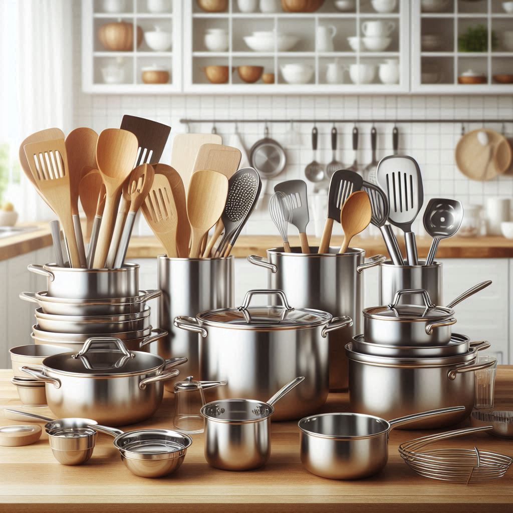
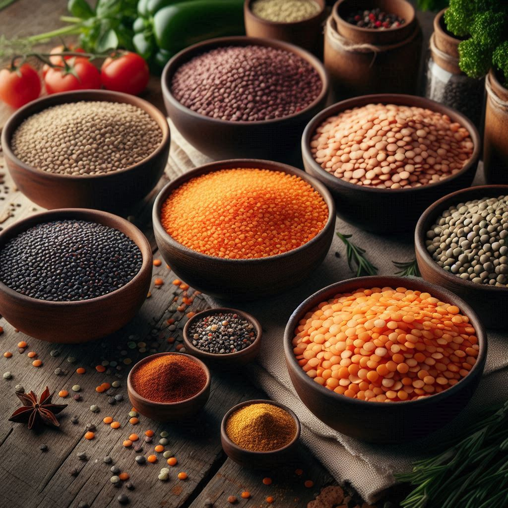

Indian cuisine is rich and diverse, known for its bold flavors, aromatic spices, and unique cooking techniques. This guide will help you understand the essentials if you are new to Indian cooking from must-have kitchen tools to fundamental techniques. With the right knowledge and preparation, you can confidently create authentic Indian dishes in your own kitchen.
Essential Kitchen Tools
Indian cuisine needs some specialized equipment to ensure the process is efficient and enjoyable. The equipment assists in grinding, rolling, and cooking food to get the right texture and taste.
- Gas Stove – A gas stove is the main cooking device in most Indian kitchens, providing precise temperature control for various cooking methods such as frying, boiling, and simmering.
- Rolling Pin & Board(Chakla & Belan) – These utensils are used to make flatbreads such as chapatis, parathas, and puris. The rolling pin (belan) flattens the dough evenly, and the board (chakla) serves as a firm surface for rolling.
- Tava (Griddle) – Tava is a circular, flat pan used to prepare rotis, dosas, and parathas. It provides even heat and makes it possible to achieve the ideal texture for Indian flatbreads.
- Heavy-Bottomed Pan(Kadhai) – A heavy, thick-bottomed pan is indispensable for frying curries, stir-fries, and deep-fried snacks. It distributes heat evenly and avoids burning the food, which is necessary for slow-cooked dishes.
- Cutlery – Fundamental cutlery such as spoons, forks, and ladles is required to mix, stir, and serve food. Other spoons such as slotted and deep spoons are suitable for other needs in cooking.
- Pressure Cooker – Pressure cooker is a common appliance in every Indian kitchen, as it shortens the cooking time of lentils (dals), rice, and meat considerably. It preserves nutrients while making sure grains and legumes are perfectly cooked.
- Spice Box (Masala Dabba) – A masala dabba is a stainless steel, round spice box having various small compartments to keep fundamental Indian spices like cumin, turmeric, coriander, chili powder, and mustard seeds. Organizing spices makes cooking more effective.
- Mortar and Pestle – A mortar and pestle is a must-have tool for grinding fresh spices, preparing pastes, and crushing ingredients such as garlic, ginger, and chilies. Although pre-ground spices can be used, freshly ground spices add much more aroma and flavor to Indian dishes.
- Blender (Mixer Grinder)– A mixer grinder or blender is a must for blending smooth spice pastes, chutneys, and grinding masalas. It saves time and effort while preparing ingredients for Indian recipes.
- Chopping Board – Strong chopping board offers a safe platform for cutting vegetables, fruits, and meat. Having a different board for cutting vegetables and meat avoids cross-contamination.
- Knife – Good-quality, sharp knife is needed for chopping vegetables, cutting meat, and preparing ingredients in an efficient way. A well-maintained knife makes cooking safer and more precise.
Key Ingredients used in Indian Cooking
The basis of Indian food is its distinctive combination of spices and fundamental ingredients that give it its characteristic flavor. Some of the most important elements are:
Spices
Spices form the backbone of Indian cuisine. Every spice has a distinct flavor, and the perfect blend can make a dish.

- Mustard Seeds (Mhauri or Rai) – Small black seeds, used extensively in South Indian cuisine. When sautéed, they impart a nutty flavor to preparations such as sambar and chutneys.
- Cumin (Jeera) – Utilized in tempering (tadka), cumin seeds provide an aromatic, slightly nutty taste to curries, rice, and lentils.
- Turmeric (Haldi) – Contributes a warm, earthy taste and rich golden hue to foods. It is also renowned for its medicinal properties, such as anti-inflammatory.
- Red Chili Powder – Provides heat and color to preparations, used extensively in curries and spice mixtures.
- Black Chili Powder – Adds a smoky heat to foods, deepening their flavor.
- Coriander (Dhaniya) – Coriander seeds and powder impart a light, citrusy taste and are also widely used in spice mixtures such as garam masala.
- Garam Masala – An aromatic spice mix of cloves, cardamom, cinnamon, and other spices used to finish deep-flavored dishes.
- Bay Leaf (Tamalpatra) – Added in biryanis, curries, and soups to impart a mild herbal flavor.
- Cardamom (Elaichi) – Used both in sweet foods and savory preparations, this spicy food adds a delicate floral essence.
Aromatics
Aromatics constitute the foundation of most Indian meals, providing depth and complexity.

- Ginger & Garlic – A paste of fresh ginger and garlic is a common ingredient in Indian cuisine, producing a rich, flavorful base for curries and gravies.
- Onions & Tomatoes – These are widely used to prepare a flavorful base for curries, adding sweetness and tanginess.
Lentils and Grains
- Rice (Basmati, Sona Masoori) – Basmati rice is used in biryanis and pulao, whereas Sona Masoori is prepared in daily meals.
- Lentils (Dal) – Toor dal (pigeon peas), moong dal (split yellow lentils), and masoor dal (red lentils) are some of the common types. Each has a distinct taste and texture.
Dairy Products

- Ghee – Clarified butter that imparts a rich, nutty flavor to food.
- Curd/Yogurt – Added to marinades, raitas, and gravies for a creamy texture and tanginess.
Kitchen Hygiene and Safety
Cooking has to be safe and hygienic. Some basic safety and cleanliness tips are as follows:
Safety Handling of Knife
Handling a sharp knife on a firm cutting board guarantees precise and safe cutting. Always cut in the direction away from your body and keep fingers curled inward so that there are no accidental injuries. Store the knives securely when not in use so that there are no accidents.
🚑First Aid: Cuts and Scrapes
Safe Cooking Practices
Take care when using hot oil, as it splatters. Use a deep pan and a long spoon to reduce risks. Avoid flammable materials near the stove, and double-check gas burners after use. When using a pressure cooker, lock the lid properly and release steam properly.
🚑First Aid: Burns
Storing Ingredients Properly
Proper storage maintains ingredients fresh and safe to consume. Store spices in sealed containers out of moisture and direct sunlight to preserve their strength. Refrigerate perishables such as dairy, fresh herbs, and leftovers immediately to avoid spoilage.
Having a Clean Kitchen
Keeping your kitchen clean inhibits contamination and ensures food safety. Wash hands before and after food handling. Clean cutting boards and countertops daily to prevent cross-contamination. Clean utensils thoroughly after handling to ensure cleanliness.
Key Cooking Methods
Mastering basic techniques will enhance your Indian cooking experience.
Simple Tadka (Tempering) Flow
Tempering (tadka) is a basic method employed in Indian cooking to add depth to flavors.
- Place oil or ghee in a pan.
- Add mustard or cumin seeds.
- When they splutter, add aromatics such as ginger, garlic, or onions.
- Add tomatoes and ground spices such as turmeric, chili powder, and garam masala.
Indian Bread Preparations
Flatbreads such as chapati and paratha need kneaded dough. Allow dough to rest prior to rolling in order to be soft
Cooking Rice & Daal
Soak lentils and rice prior to cooking to enhance texture and speed up cooking. This will aid grains to cook evenly and not become too starchey.
Conclusion
With these fundamentals under your belt, you're set to start your adventure in Indian cooking. Learning about important tools, staple ingredients, kitchen safety, and basic techniques will will help you prepare delicious and authentic Indian meals. Happy cooking! 🍛